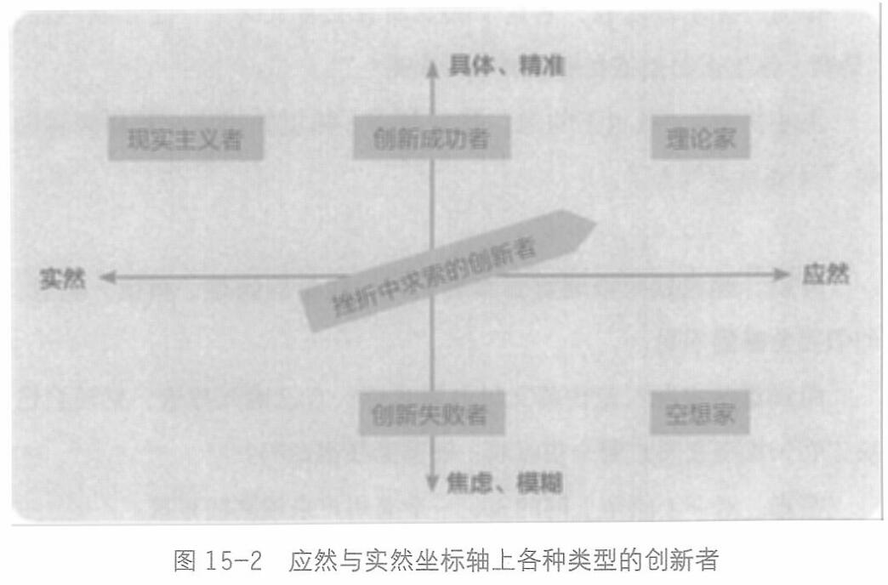

而所有的创新者，一定是不接受现实的人。同时，他们一定是行动派，不会止步于理论推导和思想实验，会选择自己动手去做些什么，改变些什么(见图15-2)。

所以，世界给创新者的挑战，或者说创新者的荣耀与磨难，就是在实然的世界里看到应然，然后以自己的凡人之躯去承担神的任务，把应然变成实然，让梦想在客观世界里成为现实。
所以，失败是创新者的老朋友。因为创新者总是要穿梭于应然和实然之间，步子一大，经常掉到裂缝里出不来，这就是所谓的失败。
所以，一个创新的领导者就要面临一个很大的考验：如何与团队一起达成共识——实然是什么样子，应然是什么样子； 如何改变当下的实然，把应然变成未来的实然。
而李兴平和王小川，代表了两种不同路径的成功。
428